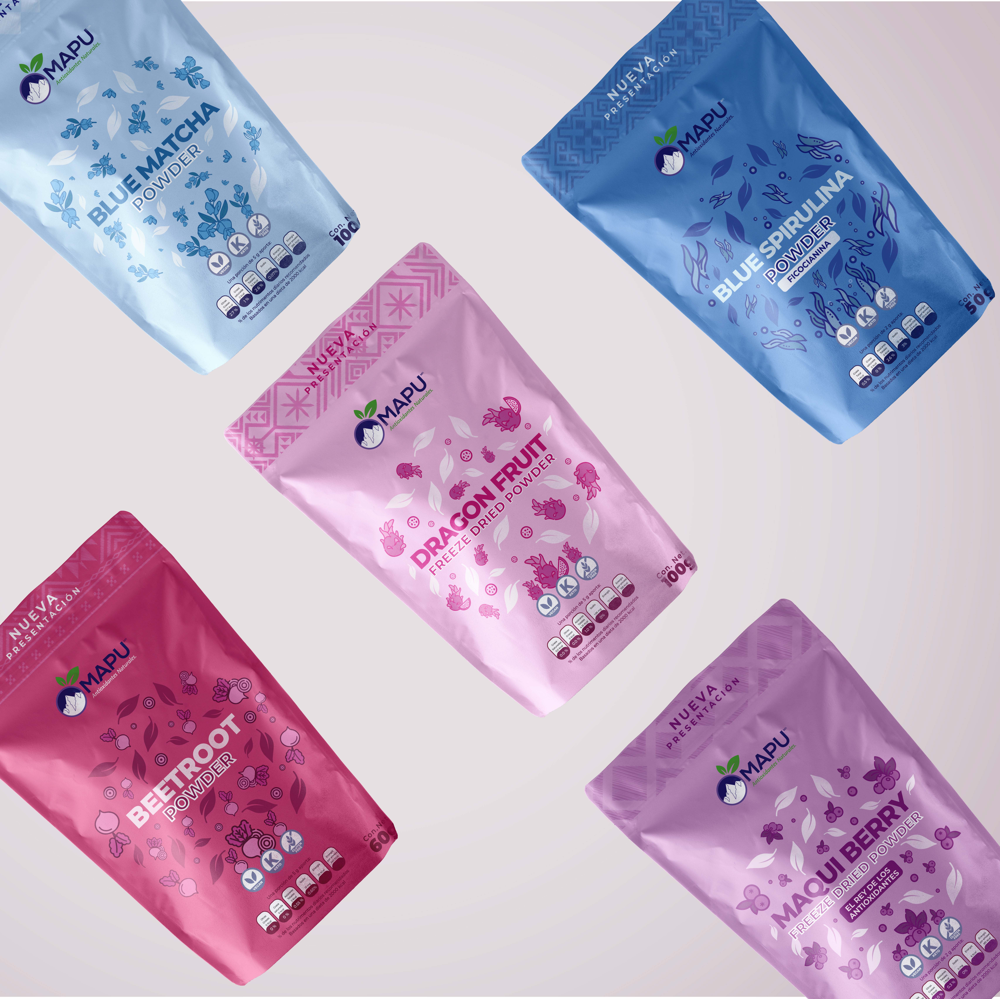

Context
A Mexican natural products brand requiring packaging and labels, menus, and designs as flexible as its possibilities.

2020 - present
Context
MAPU is a Mexican natural products brand with which I have collaborated continuously since 2020. What began as the redesign of a few packaging pieces gradually evolved into an ongoing collaboration encompassing a wide range of visual communication materials for the brand and its new ventures.

Condensed brief
A Mexican natural products brand requiring packaging and labels, menus, and designs as flexible as its possibilities.
An ongoing collaboration since 2020, continually updated and expanded through collaborative work.
Packaging, digital content, printed materials, menus, and advertising stands.
Process
The first projects focused on updating and improving existing packaging.


Evolution
As the brand grew, new products and packaging needs emerged. In addition to developing individual pieces, I designed solutions for special editions and bundles that expanded the existing visual system.


Expansion
The brand's growth led to the creation of a coffee shop and new spaces for interacting with customers. This opened the door to designing menus, promotional materials, and other communication assets tailored to this new context.


Scope
The collaboration also extended to occasional projects beyond the brand's usual applications.